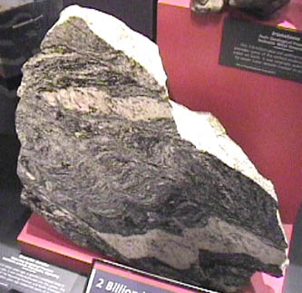
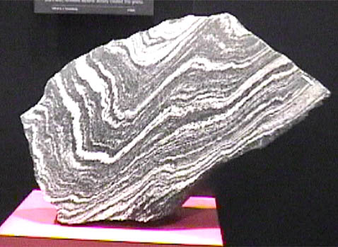

Gneiss Examples
| 
| This sample of gneiss rock shows layering of two different kinds of rock, leading to its classification as a metamorphic rock. The layering also shows bending, suggesting that it has been subject to pressures.
This rock was included in a display of geologic ages at the Smithsonian Museum of Natural History. The suggested age was 2 billion years.
|

This sample, which was also classified as gneiss, was identified as having come from Wyoming, from the North Laramie Mountains. One part of it was associated with an age of 2.6 billion years, and another part as 1.8 billion years.
|
Index |